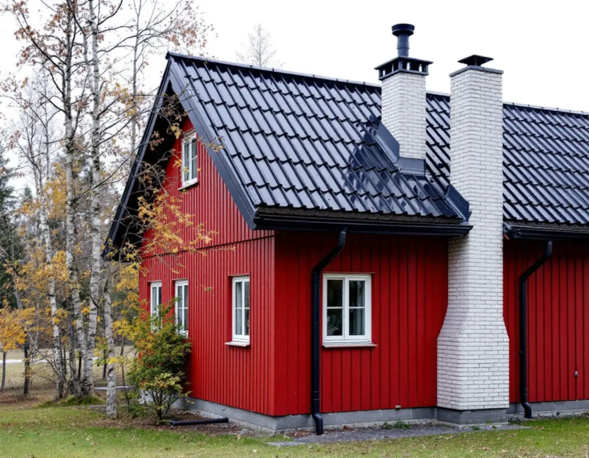
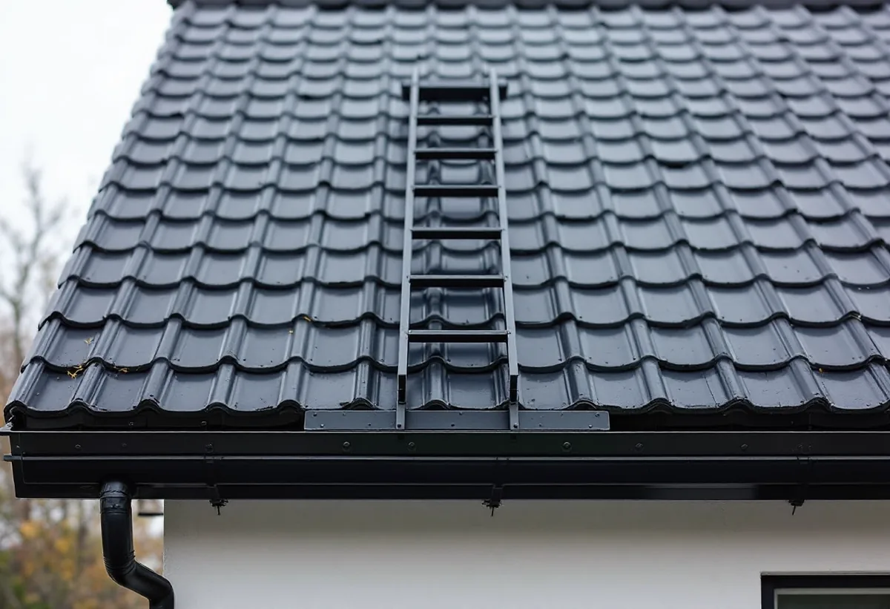

Vägen upp
Vi går igenom uppgången, glidskyddet, takstegen och vägen till skorstenen enligt räddningstjänstens lista.

Norrtälje kommun har drygt 19 000 bostäder i småhus enligt SCB.
Skicka gärna en bild på taket.
Något blev fel. Kontrollera uppgifterna eller ring 08 12 410 276.
Vi tittar på jobbet på plats innan du får offert.
Du ser vad som ingår och vad det kostar.
Vi drar av ROT direkt och sköter ansökan.
Geal Entreprenad AB, Bromma. Org.nr 559303-7566.

Har huset en eldstad ska skorstenen sotas och kontrolleras, och då ska vägen upp på taket vara säker, och den vägen går över plåt: takfot, hängränna, takstege och skorstensbeslag. Geal Entreprenad AB utför plåtarbeten och monterar takskydd på villor och fritidshus i Norrtälje kommun, med gratis platsbesök och skriftligt kostnadsförslag.
I Norrtälje kommun är det räddningstjänsten som gör brandskyddskontrollen av eldstäder. Enligt räddningstjänsten går en brandskyddskontrollant upp på cirka 45 tak varje vecka, och därför behöver det finnas takskyddsanordningar hela vägen från marken till skorstenen. Uppstigningsanordningarna ska vara godkända och monterade enligt produktens installationsanvisning.
Uppfyller takskyddet inte kraven kan räddningstjänsten inte genomföra hela kontrollen. Fastighetsägaren får då en ny tid för att slutföra kontrollen ovan tak. Vilka krav som kan ställas på en fastighet bestäms av Boverkets föreskrifter, skriver räddningstjänsten.
Boverket nämner just skorstenen som exempel på ett fast arbetsställe på taket: den måste sotas regelbundet för att det ska vara tillåtet att elda, och sotaren behöver kunna ta sig upp, förflytta sig till skorstenen och arbeta där på ett säkert sätt. För oss betyder det att takskyddet hör ihop med plåtarbetet. Byts hängrännor, takfotsplåt eller skorstensbeslag är det rätt tillfälle att se över fästpunkterna för stege och glidskydd. Mer om utrustningen finns under taksäkerhet och snörasskydd.
Den som går upp på taket från utsidan ska enligt räddningstjänsten alltid ha ett glidskydd fast monterat vid takfoten, så att markstegen inte kan glida åt sidan eller bakåt. Glidskyddet ska sitta i en fast del av byggnaden, helst precis intill takstegen, och vara certifierat enligt standarden SS 831342:2014.
Räddningstjänsten är tydlig på en punkt som rör plåtslagaren direkt: glidskyddet får inte monteras i hängrännan, eftersom rännan inte klarar vikten som krävs, minst 150 kilo. Många fallolyckor sker just där markstegen möter taket. När vi monterar nya rännor placerar vi därför rännkrokarna så att glidskyddet kan fästas i takfoten bredvid, och inte på rännan.
Markstegen ska följa standarden SS-EN 131, vara av lättmetall eller annat lätt material och väga högst 20 kilo. En lös markstege får användas om fasaden är högst 4 meter. Mellan 4 och 8 meter bör det i stället finnas en fast fasadstege eller en taklucka inifrån, och över 8 meter ska uppgången alltid vara invändig via taklucka.
Lutar taket mer än 6 grader måste det enligt räddningstjänsten finnas en fast takstege eller separata taksteg mellan uppgången och skorstenen. Takstegen ska sitta fast med minst fyra infästningar, upptill och nedtill, i byggnadens bärande delar. En stege som bara är fäst upptill eller hänger löst över nocken är inte tillåten och måste bytas eller monteras fast innan den används igen.
Lösa taksteg ska ligga i en rak linje och monteras enligt tillverkarens anvisningar. Är det mer än 1 meter i sidled från uppgången till skorstenen ska en takbrygga monteras vid nocken. Står skorstenen mer än 1,2 meter över arbetsstället på taket behövs dessutom en skorstensstege eller en arbetsplattform.
Varje infästning genom taket är en möjlig läckagepunkt. På ett plåttak tätar vi genomföringarna så att vattnet fortsätter att rinna förbi, och på ett tegeltak sätts infästningarna i läkt och underlag enligt tillverkarens anvisning. Ska taket ändå läggas om kan takskyddet planeras samtidigt, se takbyte i Norrtälje.
Vid brandskyddskontrollen tittar räddningstjänsten bland annat på eldstaden, skorstenen, taket och byggnadsdelar som ligger nära. Inför besöket ber man fastighetsägaren att kontrollera att glidskyddet sitter fast, att vindsluckan går lätt att öppna och att vägen till skorstenen är fri om den går genom vinden.
Skorstensbeslaget, alltså plåten som leder vattnet runt skorstenen och ner på taket, slits av väder och rörelser i taket. Ett beslag som släppt syns ofta som fukt på vinden kring murstocken. Vi byter eller kompletterar beslaget och kan klä in en sliten skorstenskrona i plåt. Behöver själva murstocken lagas finns mer under skorstensrenovering.
Boverkets föreskrifter kräver också skyddsanordningar mot fallande is och snö vid byggnaders entréer om det finns särskilda risker för personskador. Kraven gäller vid nybyggnad och får anpassas när en befintlig byggnad ändras. Vi tar upp frågan på platsbesöket när taket lutar mot entrén. Allmänt om plåtarbeten finns på sidan plåtslagare.
Vi går igenom uppgången, glidskyddet, takstegen och vägen till skorstenen enligt räddningstjänstens lista.
Rännor, takfotsplåt, skorstensbeslag och genomföringar kontrolleras samtidigt.
Plåtarbete och takskydd redovisas som skilda poster i ett skriftligt kostnadsförslag.
Takskyddet fästs i bärande delar och plåten monteras med tätade infästningar.
Vi visar var glidskydd och stege sitter, så att du kan förbereda nästa brandskyddskontroll.
Skatteverket räknar det som rotarbete i ett småhus, även ett fritidshus, att reparera, rengöra eller byta ut plåttak, hängrännor och stuprör, att mura och reparera skorstenar och att montera och montera ner byggnadsställningar i samband med rotarbetet.
Avdraget är 30 procent av arbetskostnaden, högst 50 000 kr per person och år och högst 75 000 kr tillsammans med rutavdrag. Material och resor ger inget avdrag. Geal drar avdraget direkt på fakturan.
Takets höjd och lutning, hur långt det är från uppgången till skorstenen, om takskydd ska nymonteras eller bara kompletteras, skick på rännor och skorstensbeslag och vilken ställning som behövs. Restiden till kust och skärgård räknas in. Efter ett gratis platsbesök får du ett skriftligt kostnadsförslag.
Plåttak, hängrännor och beslag.
Plåtslagare i Stockholm →Takbyte, takbesiktning och plåtarbeten.
Takläggare i Norrtälje →Roslagen, skärgård och fritidshus.
Takrenovering i Norrtälje →Stugtomter, strandskydd och avlopp.
Attefallshus i Norrtälje →Fritidshus, WC-tillstånd och brunn.
Badrumsrenovering i Norrtälje →Nytt hus, förhandsbesked och egen brunn.
Byggföretag i Norrtälje →Ljust bostadshus och röda uthus.
Fasadmålning i Norrtälje →Bruksvillor, sommarvillor och Roslagens trähus.
Fasadrenovering i Norrtälje →Roslagens hus, bruksorter och bidrag i Norrtälje.
Fönsterbyte i Norrtälje →Gårdar, timmerhus och lösa innerbågar i Roslagen.
Fönsterrenovering i Norrtälje →Plankgolv i gamla gårdar och parstugor.
Golvläggare i Norrtälje →Från slipat eller lackat golv till skurgolv.
Golvslipning i Norrtälje →Gasolspis, vedspis och pentry i gäststugan.
Köksrenovering i Norrtälje →Trähus, fritidshus och kustlägen i Norrtälje.
Målare i Norrtälje →Fritidshus, altan och gäststuga.
Snickare i Norrtälje →Kust, snö och Roslagens tak.
Takbyte i Norrtälje →Ny tapet i fritidshus och villor.
Tapetsering i Norrtälje →Tidigare tillbyggnader, strand och frivilligt lov.
Tillbyggnad i Norrtälje →Egen brunn och eget avlopp.
Totalrenovering i Norrtälje →Eller ring 08 12 410 276, mån–fre 08–17.
Skicka gärna en bild på taket.
Något blev fel. Kontrollera uppgifterna eller ring 08 12 410 276.